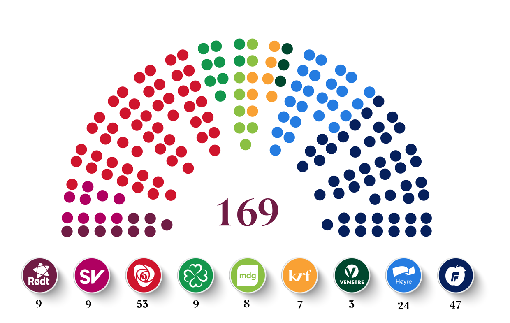
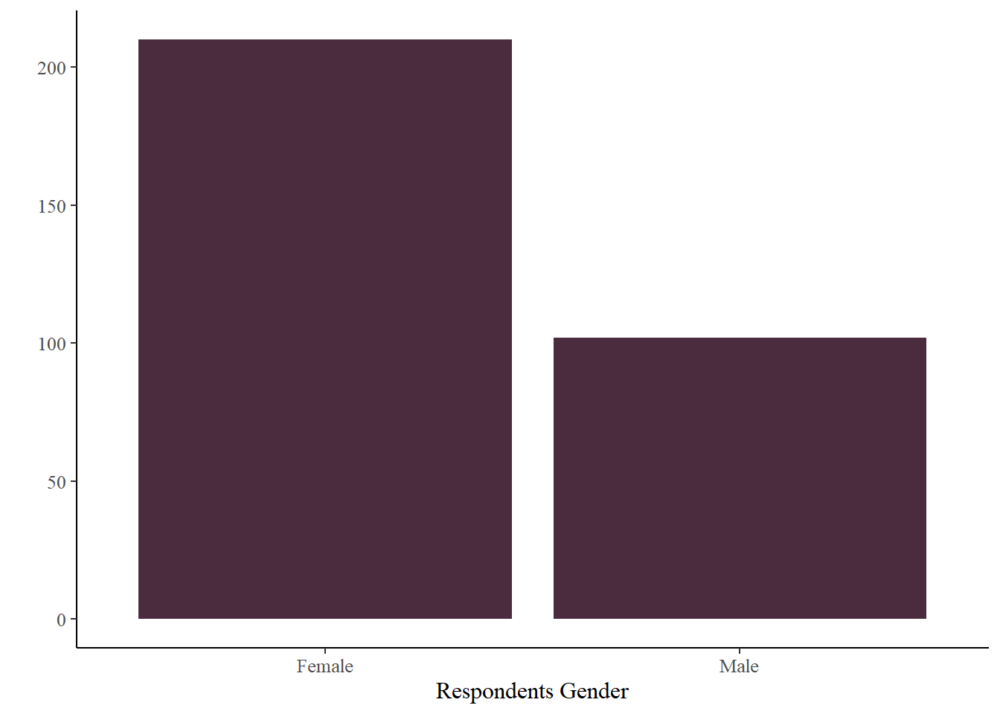
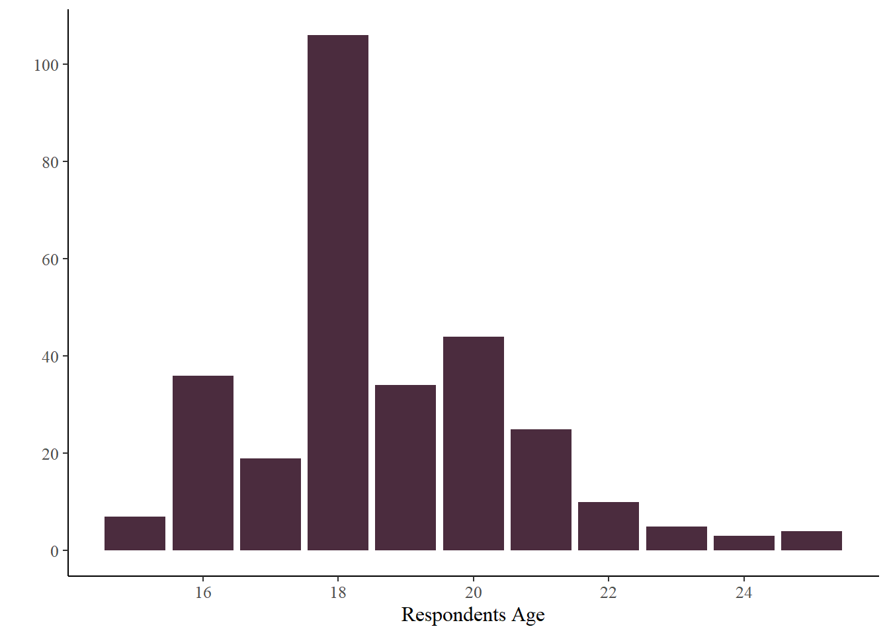
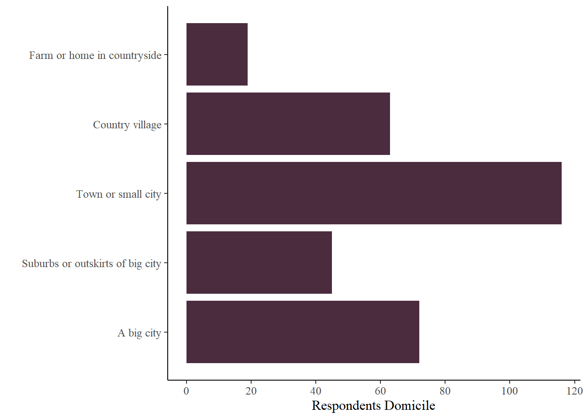
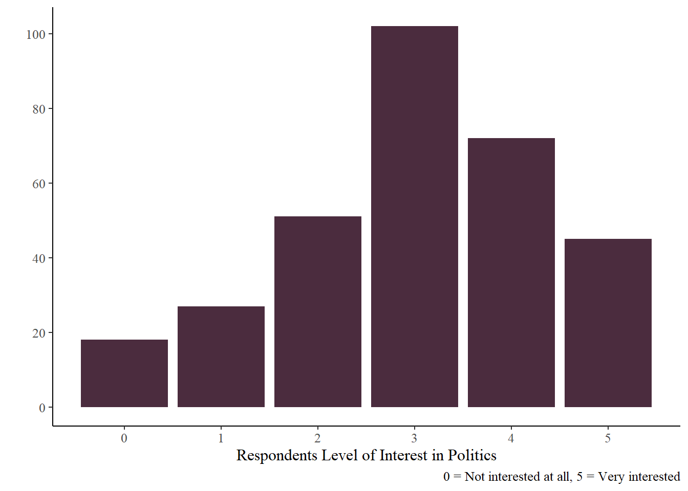
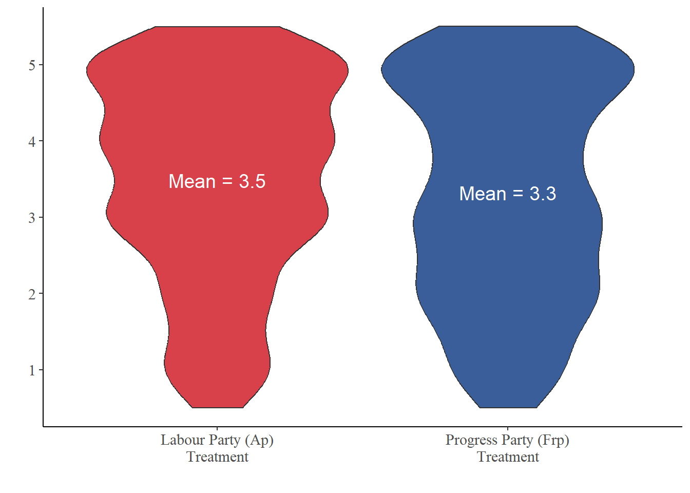
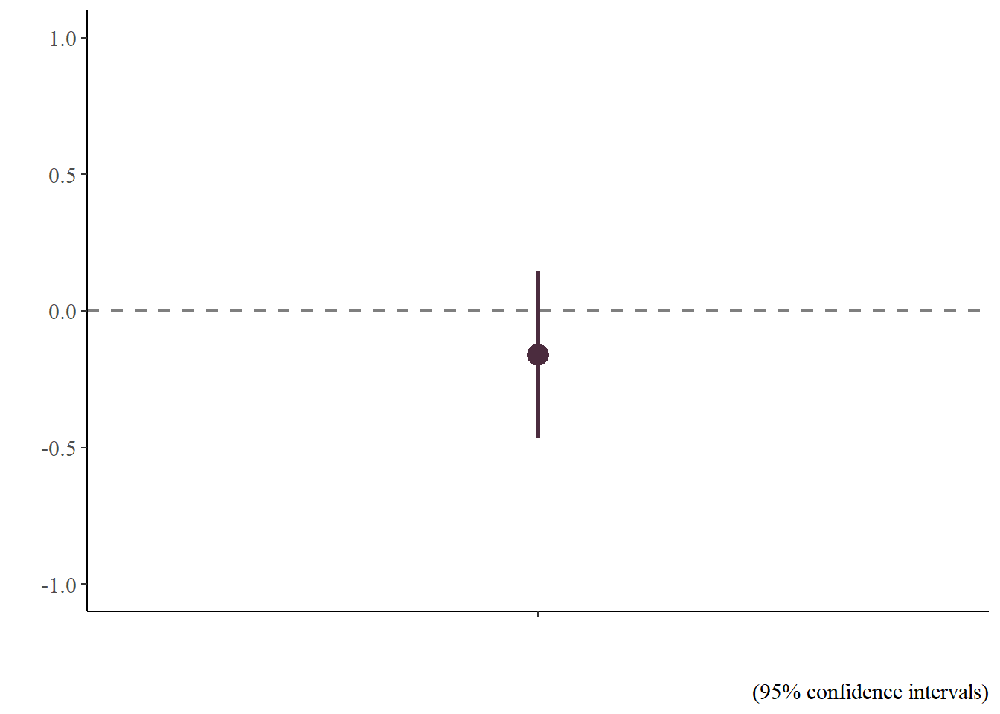
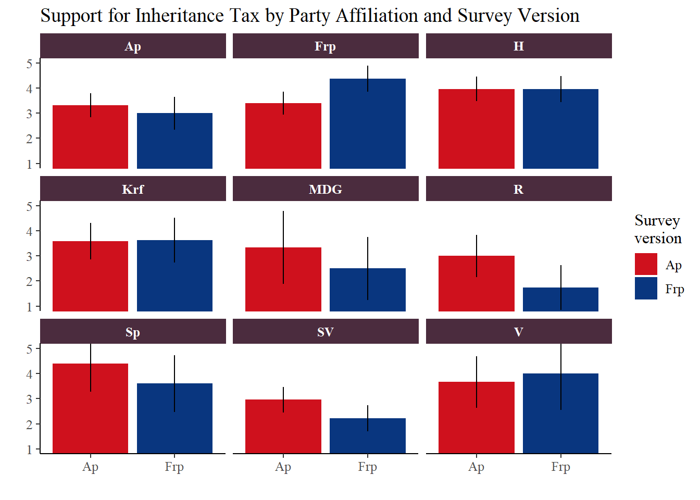

flowchart LR A[Landing page] --> B(Randomization) B --> C[Survey version 1] B --> D[Survey version 2] style A color:#4B2C3E style B color:#4B2C3E style C color:#4B2C3E style D color:#4B2C3E
The Power of Party Cues
Same Policy, Different Party - Do Opinions Change?
Our Survey

We - six 2nd and 3rd year political science students at the University of Stavanger - wanted to find out how young people’s opinions are shaped by political parties. Do people respond to the policy itself, or to the party presenting it?
To answer this, we conducted a survey experiment. We created two versions of the same survey, identical in all aspects except one: towards the end, the respondents were presented with a statement about inheritance tax. In one version it was attributed to Arbeiderpartiet (the Labour Party), and in the other to Fremskrittspartiet (the Progress Party).
The aim of this survey was to find out if - and how - responses vary depending on which party presents the statement about inheritance tax. Labour Party (Ap) voters would agree more if Ap presented the statement, and Progress Party (Frp) voters would agree more if Frp presented it. We also had one additional theory: voters on the left of the political spectrum would be more skeptical when Frp presented the statement, and the same applied to right-leaning voters when Ap presented it.
Setting Up the Experiment
We knew early on that we wanted to explore how the political party presenting a policy affects people’s opinions. We chose Ap and Frp to be the two parties presenting the policy, because they are (at the time of this survey experiment) the two largest parties in Norwegian politics, and they are at opposite sides of the political spectrum 1.

We chose inheritance tax as the policy to present because it had to be a policy that both Ap and Frp actually agreed on, and it is a simple policy. Everyone knows what inheritance tax is, and if for some surprising reason they do not (which would be a bit concerning), they will know what it is immediately from its name.
Both survey versions included a few general questions about age, gender, social media usage, and which political party they feel closest to. The questions were presented in the same order and worded identically in both versions - down to the sentence structure, punctuation, and formatting. The only difference was the treatment question:
The Labour Party believes that there should be no tax on inheriting large assets. To what extent do you agree or disagree with this statement?
and
The Progress Party believes that there should be no tax on inheriting large assets. To what extent do you agree or disagree with this statement?


To direct the respondents to one of the two survey versions, we created a landing page containing a start button randomly assigning each respondent to one of the versions.
Meet the Participants
In total, 315 participants within our target group (25 years or younger) completed the survey. Respondents over the age of 25 were excluded from the analysis, but their number was small as we targeted young participants.
Among the participants, 210 (67%) are female and 102 (32%) are male. Most are 18 years old (34%), and 84% are between 16 and 21. They come from a variety of residential areas, ranging from big cities to farms in the countryside, as shown in the domicile distribution below. Their level of political interest is moderate, with an average slightly above the midpoint of the scale (mean = 3.01).




The Verdict: Party vs. Policy
Do people respond to the policy itself or to the party presenting it? Are there differences in responses depending on whether Ap or Frp presents the statement?
Looking at the graphs below, we can observe the overall effect of Ap and Frp presenting the statement about inheritance tax. People agree slightly more with the statement that there should be no tax on inheritance when it is presented by Ap (mean = 3.5) compared with Frp (mean = 3.3). This could, at first glance, reflect a small degree of skepticism towards Frp.
However, before we can say anything for sure, we need to check whether the differences we see are real or just random variation in our sample. Calculating the confidence intervals helps us see how much of what appears to be an effect could actually be due to random sampling variation. Looking at the graph below, we can already spot that some of the differences are likely just random noise.
Looking at the coefficient plot (Graph b), we can see that the estimated effect of the Frp treatment (compared to Ap) is approximately -0.2. However, the error bar representing the 95% confidence interval crosses the dashed zero-line. This means that the difference is not statistically significant. In other words, we cannot conclude that the party cue has a decisive impact on the respondents’ opinions on inheritance tax; we cannot with confidence say that the -0.2 difference is not just simply random noise.


The Deep Dive
In summary, our experiment shows that within our sample, participants agreed slightly more with the statement about inheritance tax when Ap is the party presenting it compared to Frp. However, while we observed slight variations in support based on the party cue, the difference was not statistically significant. We cannot with confidence generalise this to the wider population.
Our analysis doesn’t stop here! For a deeper dive into how we designed the experiment, collected the data, and the theory behind our hypotheses, check out the dedicated sections on this website. You can also find more in-depth results - including how the cues affected voters depending on which party they feel closest to - under our survey design and in-depth analysis pages.

Footnotes
Picture from https://undervisning.stortinget.no/partier/partiguide-for-videregaende/↩︎